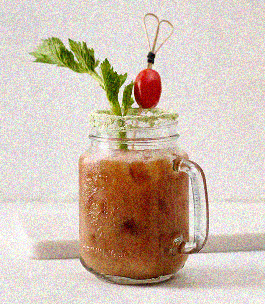

Green Mary
Ingrédients pour 4 cocktails
- 500g Tomates cerise
- 500g Brocoli
- 300g Céleri(branche)
- 100g Sauce soja citronnée Ponzu Kikkoman
- 4g Wasabi
- 30g Glace par personne
- 160ml Vodka
Préparation
- Mélangez le wasabi avec 1 cuil. de sauce soja citronnée Ponzu et faites dissoudre. Ajoutez le reste de sauce soja citronnée Ponzu et mélangez.
- Extrayez le jus des légumes pour obtenir respectivement 280 g de jus de tomates, 180 g de jus de brocoli et 240 g de jus de céleri. Mélangez les jus de légumes dans un verre et mettez au réfrigérateur.
- Remplissez les verres à cocktail de glace. Versez 40 ml par verre, ajoutez le jus de légumes et assaisonnez avec le mélange Ponzu. Décorez et servez avec la branche de céleri.